Tutorial: Simulate forces on an I-beam
Use linear static analysis to identify the stresses on an I-beam when a force load is applied to one end. The study parameters used in this tutorial are:
-
Study type=Linear Static
-
Load type=Force
-
Constraint type=Fixed
-
Mesh type=Tetrahedral
The tutorial is divided into four sections to make it easier to scan.
Define a structural study
-
Open the file named FE_I-Beam.par.
Simulation models are delivered in the \Program Files\Siemens\Solid Edge 2023\Training\Simulation folder.
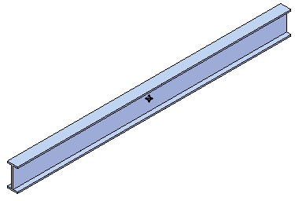
-
Set your force units to newtons:
-
On the File menu, click Info→File Units.

This displays the Units tab in the Solid Edge Options dialog box.
-
Observe that the unit system for this model is based on the metric MMKS (millimeter, kilogram, second).

You can make selective changes to these units using the Base Units table and the Derived Units table in this dialog box.
-
In the Derived Units table, the analysis properties are listed in the Name column. Scroll down to locate the table row for Force. Click in the Value box, and then choose N (newtons) from the list.

-
Click Apply and OK.
-
-
Increase the font size of load definition handles, which look like text:
-
Select View tab→Style group→Styles
 .
. -
In the Style dialog box:
-
Select Dimension from the Style type list.
-
Select ANSI (mm) from the Styles list.
-
Click Modify.
-
-
In the Modify Dimension Style dialog box:
-
Select the Text tab.
-
Type 40.00 in the Font Size box.
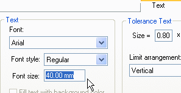
-
Click OK, and then click Apply.
-
-
-
Create a simulation study.
-
On the Simulation tab→Study group, select Steel, structural from the Material List.
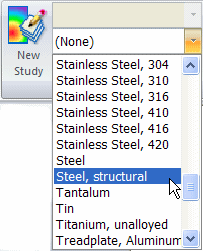
-
Select Simulation tab→Study group→New Study.

-
For this activity, choose the Linear Static study type and Tetrahedral mesh type, and then click OK.


The study is created and is active, as indicated on the ribbon in the Study group on the Simulation tab.
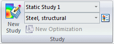
The new study also is listed on the Simulation tab in PathFinder.
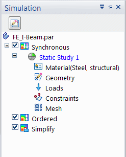
-
-
Rename the study:
-
Right-click the default study name, and rename it to Force on end.
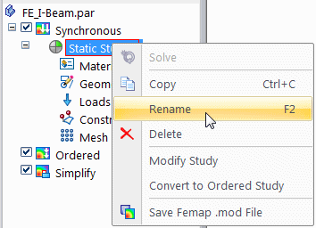
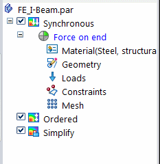
The new name is shown In the Study group on the Simulation tab.
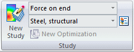
-
Apply a force load
-
Define a force load:
-
Select Simulation tab→Structural Loads group→Force.
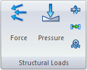
-
Change the selection type to Edge/Corner.
-
Zoom in on the left end of the beam and select the top edge.
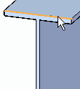
The force directional arrow is displayed.
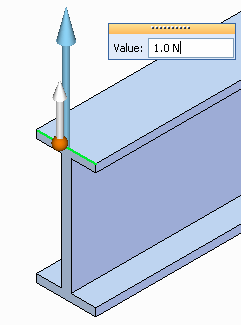
-
On the Loads command bar, click the Flip Direction button
 to reverse the force direction.
to reverse the force direction.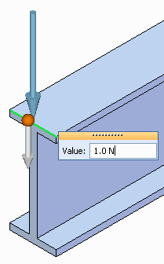
-
Enter 1000 N in the Value box.
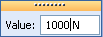
-
Click the Symbol Size/Spacing button
 on the Loads command bar.
on the Loads command bar. -
Move the Symbol Size slider towards Large. Click OK.
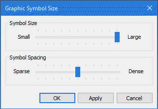
-
Right-click in space to accept the force load, and click to exit the command.
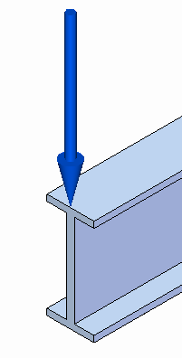
-
-
Rename the force load in the Simulation pane.
Force loads are listed under the Loads collector in the Simulation pane.
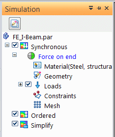
-
Right-click the Force 1 load and select Rename.
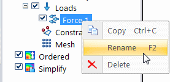
-
Type End weight for the new load name.
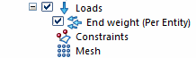
-

Apply a fixed constraint
-
Select Simulation tab→Constraints group→Fixed.

-
Zoom in on the right end of the beam. Use QuickPick to select the end face.

A preview of the fixed constraint appears on the face.

-
Enlarge the constraint symbol size by selecting the Symbol Size/Spacing button
 on the Constraints command bar, and then moving the top slider towards Large. Click OK to update the symbol.
on the Constraints command bar, and then moving the top slider towards Large. Click OK to update the symbol. -
To finish placing the constraint, right-click or press Enter.
-
Click Fit
 to see the beam with the fixed constraint as well as the previously applied force.
to see the beam with the fixed constraint as well as the previously applied force.
Apply a tetrahedral mesh
Use a tetrahedral mesh to mesh an I-beam.
-
From the Simulation tab→Mesh group, select the Mesh command.

-
The Mesh dialog box displays a Subjective mesh size slider for tetrahedral mesh elements.
Tetrahedral is the default mesh type defined when you created the study.
-
In the Mesh dialog box, click the Mesh button.

The NX Nastran mesh processing starts and displays a progress meter.

After a short period of time, the beam is displayed with a tetrahedral mesh.
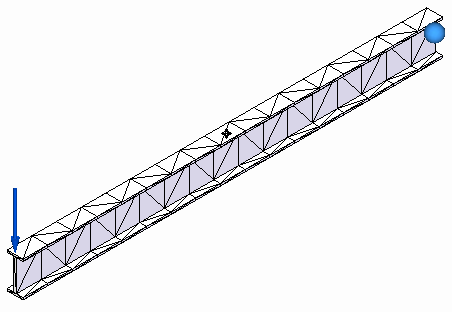
-
Close the dialog box.
Solve the simulation
After solving the study, you can change the appearance of the simulation results color bar graph, including changing the text size to make it easier to read.
-
To solve the study, choose Simulation tab→Solve group→Solve.

If the study fails to solve, a message box provides remedial actions. You may be prompted to do one of the following:
-
Use the Modify Study dialog box to select the option, Geometry check: Warning only.
-
Open the Mesh Options dialog box, and on the Mesh Sizing page, under Geometry Preparation Options, select or clear the check box, Prepare geometry for meshing.
After a few moments, the solution is displayed in the Simulation Results environment.
The results data are displayed using the Automatic number format, as shown below. The Automatic format selects the best possible numerical format for each of the values, instead of using the same format for all.
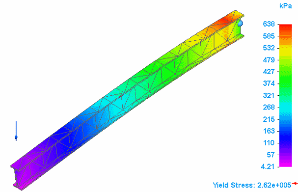
-
-
Experiment with changing the formatting of the values displayed on the color bar using the following options on the Color Bar tab→Format group:
-
Width—Changes the width of the color bar, without changing the width of the text. To change the width of the text, use the options in the Font group.
-
Format—For example, try Scientific or Floating Point.
-
Decimals—Changes the number of decimals displayed in the result values.
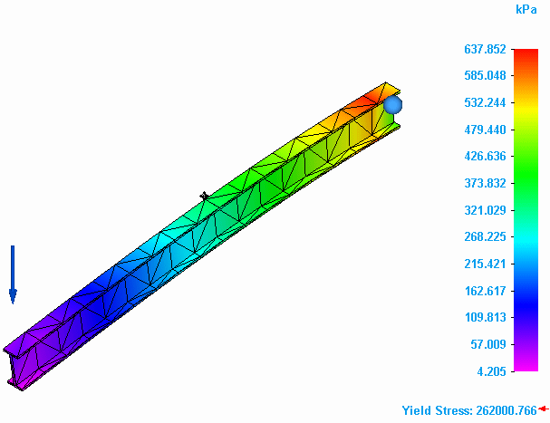
-
-
To change the text size of the values on the color bar, select Color Bar tab→Font group→Font Size list.
Note:Changes made using the controls in the Font group—Font, Font Size, Font Color, Bold, and Italic—affect all of the following in the simulation results:
-
Color bar components: legend values, title, and footer.
-
Descriptive header.
-
Minimum and maximum value markers.
-
Information in the probe data table.
-
The text displayed with images.
For more information about these options, see:
-
-
On the ribbon, click Close Simulation Results.

-
Close this file.